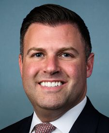

← Every state
Pennsylvania
The average Liberty Score of the delegation is 72 out of 100, a C-. 17 of its seats in Congress are decided on November 3, 2026.
On the ballot November 3
17 House seats in Pennsylvania. Tap a race to see the candidates side by side.
- 1st DistrictA-Brian FitzpatrickR · holds the seat–Bob HarvieD · no votes in Congress to grade
- 2nd DistrictFBrendan BoyleD · holds the seat–Jessica ArriagaR · no votes in Congress to grade
- 3rd DistrictOpen seat–Chris RabbD · no votes in Congress to grade–Dennis MahoneyIndependent · no votes in Congress to grade
- 4th DistrictFMadeleine DeanD · holds the seat–Aurora StuskiR · no votes in Congress to grade
- 5th DistrictFMary Gay ScanlonD · holds the seat–Nicholas ManganaroR · no votes in Congress to grade
- 6th DistrictFChrissy HoulahanD · holds the seat–Marty YoungR · no votes in Congress to grade
- 7th DistrictARyan MackenzieR · holds the seat–Bob BrooksD · no votes in Congress to grade
- 8th DistrictARob BresnahanR · holds the seat–Paige CognettiD · no votes in Congress to grade
- 9th DistrictADan MeuserR · holds the seat–Rachel WallaceD · no votes in Congress to grade
- 10th DistrictB+Scott PerryR · holds the seat–Janelle StelsonD · no votes in Congress to grade
- 11th DistrictALloyd SmuckerR · holds the seat–Nancy MannionD · no votes in Congress to grade
- 12th DistrictFSummer LeeD · holds the seat–James HayesR · no votes in Congress to grade
- 13th DistrictAJohn JoyceR · holds the seat–Beth FarnhamD · no votes in Congress to grade
- 14th DistrictAGuy ReschenthalerR · holds the seat–Alan BradstockD · no votes in Congress to grade
- 15th DistrictAGlenn ThompsonR · holds the seat–Ray BilgerD · no votes in Congress to grade
- 16th DistrictAMike KellyR · holds the seat–Justin WagnerD · no votes in Congress to grade
- 17th DistrictFChris DeluzioD · holds the seat–Tony GuyR · no votes in Congress to grade
Senators today


Representatives today
 Glenn ThompsonR · Pennsylvania · 15th DistrictA
Glenn ThompsonR · Pennsylvania · 15th DistrictA Robert P. Bresnahan, Jr.R · Pennsylvania · 8th DistrictA
Robert P. Bresnahan, Jr.R · Pennsylvania · 8th DistrictA Mike KellyR · Pennsylvania · 16th DistrictA
Mike KellyR · Pennsylvania · 16th DistrictA Guy ReschenthalerR · Pennsylvania · 14th DistrictA
Guy ReschenthalerR · Pennsylvania · 14th DistrictA Lloyd SmuckerR · Pennsylvania · 11th DistrictA
Lloyd SmuckerR · Pennsylvania · 11th DistrictA Daniel MeuserR · Pennsylvania · 9th DistrictA
Daniel MeuserR · Pennsylvania · 9th DistrictA
Ryan MackenzieR · Pennsylvania · 7th DistrictA John JoyceR · Pennsylvania · 13th DistrictA
John JoyceR · Pennsylvania · 13th DistrictA Brian K. FitzpatrickR · Pennsylvania · 1st DistrictA-
Brian K. FitzpatrickR · Pennsylvania · 1st DistrictA- Scott PerryR · Pennsylvania · 10th DistrictB+
Scott PerryR · Pennsylvania · 10th DistrictB+ Brendan F. BoyleD · Pennsylvania · 2nd DistrictF
Brendan F. BoyleD · Pennsylvania · 2nd DistrictF Christopher R. DeluzioD · Pennsylvania · 17th DistrictF
Christopher R. DeluzioD · Pennsylvania · 17th DistrictF Chrissy HoulahanD · Pennsylvania · 6th DistrictF
Chrissy HoulahanD · Pennsylvania · 6th DistrictF Dwight EvansD · Pennsylvania · 3rd DistrictLeaving CongressF
Dwight EvansD · Pennsylvania · 3rd DistrictLeaving CongressF Madeleine DeanD · Pennsylvania · 4th DistrictF
Madeleine DeanD · Pennsylvania · 4th DistrictF Mary Gay ScanlonD · Pennsylvania · 5th DistrictF
Mary Gay ScanlonD · Pennsylvania · 5th DistrictF Summer L. LeeD · Pennsylvania · 12th DistrictF
Summer L. LeeD · Pennsylvania · 12th DistrictF
Think a grade is wrong? Argue it with us.
The community meets on a group call every day, with the hosts and the panel. Bring the vote you think we got wrong.